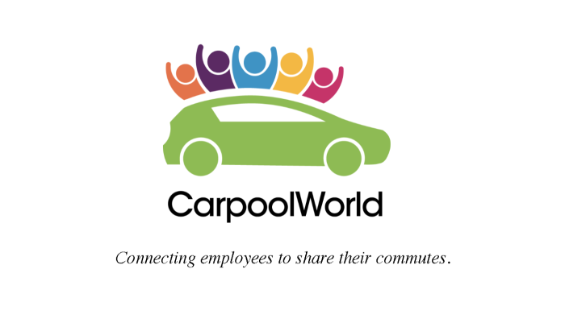

CARPOOLWORLD
Website Evaluation and App Design
 CarpoolWorld has been the global leader in authentic rideshare matching since its website launch in 2000. Unlike other ride hailing apps, CarpoolWorld enables substantial cost savings for drivers and passengers while alleviating infrastructure and environmental impacts.
We believe their cause has tremendous potential. We designed a prototype mobile app for the company to make the platform more accessible to the users.
Problem Definition
CarpoolWorld has registered more than 500,000 individual users and hundreds of prestigious universities, municipalities, hospitals, and corporate ride sharing groups across the U.S.A. and around the world. The company wanted to further expand their reach, but realized that more and more of their clients were looking for a mobile app as opposed to a website for ease of accessibility.
The client thus approached us with clearly defined problems that they wanted to resolve -- enhance the user experience by designing for a mobile app and improve the user retention rate. The company did not have a developed mobile app, but they did have a low-fidelity prototype that they wanted us to work off of. The idea was to create an interface that offers instant access and improve the data collection process of the platform.
Our goal was: To get familiar with the current platform, clearly define the issues that exist in the website, and create a mobile app design addressing those issues.
Audience
When inquired about the user base, CarpoolWorld specifically mentioned they leverage their trusted cloud-based rideshare search engine for prudent and conscientious enterprises. The goal is simple.
The company already has 30+ prestigious paying clients which gives them about 500,000 users, a majority of which comprise of the corporate companies. The employees of these companies was our user base.
We could not get access to their actual clients, but each of the team members was working over the summer and this helped us get insights about the thought process of interns/newly hired employees and what their issues they face in their commute to work. Imagine this situation. One of our own team members had this situation and this helped us gain invaluable insight into the problem. Instead of creating personas of our users we decided to take a different approach. We created a general situational story of the basic user case of the application. 
My Team/Role
Malvi Shah Damini Bhatt Suleiman Ali Shakir
Each of us had a different way of looking at the task at hand, and that subsequently helped us consider multiple design directions and further strengthened the final solution. I conducted the research, talked to the users, learnt about their frustration and pain points and analysed the findings at length with my teammates. We collectively set up specific goals for the project. I worked on designing the wireframes, taking into consideration the appropriate interface design patterns and also participated in testing the prototype.
Constraints